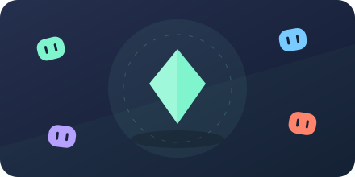
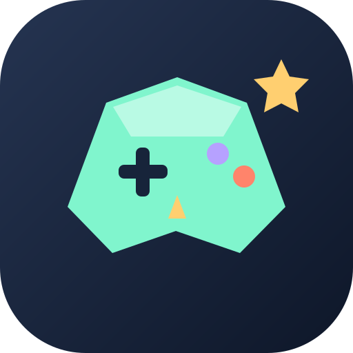
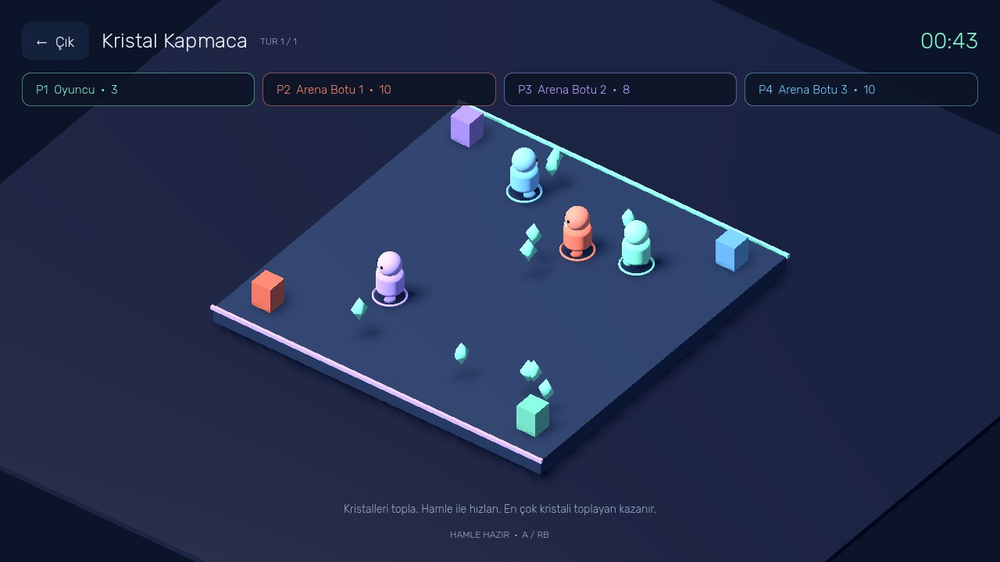
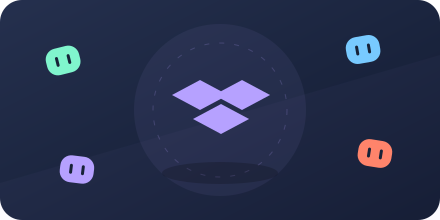
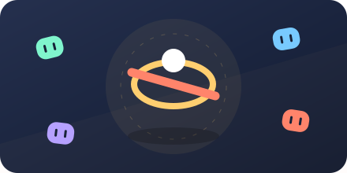
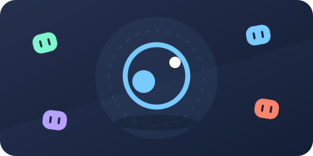
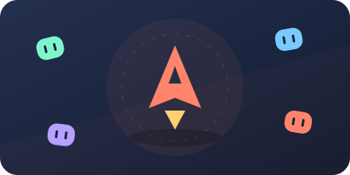
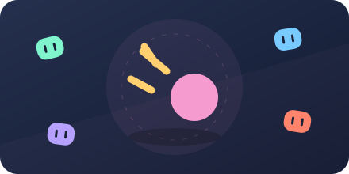

01 / 3D · TOPLA
Kristal Kapmaca
Parlayan kristalleri kap. Hızlan, rakiplerini geç, en çok kristali sen topla.
45 SANİYE ↗
CEP ARENAArkadaşlarını çağır. Rengini seç.
Her turda başka bir oyunun yıldızı ol.

Üç boyutlu arenalardan neon sahalara.
Altı farklı oyun, kısa turlar, bol rekabet.

Parlayan kristalleri kap. Hızlan, rakiplerini geç, en çok kristali sen topla.
45 SANİYE ↗
Doğru renge koş. Diğer karolar kaybolmadan güvenli bir yer bul.
48 SANİYE ↗
Işın hızlanıyor. Zıplamanı zamanla ve ayakta kalanların arasına gir.
45 SANİYE ↗
Kaleni koru, diski rakibine gönder. Sert bir vuruşla oyunu değiştir.
60 SANİYE ↗
Engellerden sıyrıl. Turboya bas. En uzağa giden pilot ol.
45 SANİYE ↗
Uzay dar, meteorlar fazla. Refleksine ve kısa süreli kalkanına güven.
45 SANİYE ↗İki, üç veya dört kişilik maç aç. Eksik oyuncuları üç zorluk seviyesindeki botlar tamamlasın.
Aynı Wi-Fi, LAN veya PC'lerde Radmin ağı. Bir kişi oda açar, diğerleri IP adresiyle katılır. Android ve Windows birlikte oynar.
Tek PC'de iki gamepad + bir klavye/mouse ile üç kişi. Android'de de gamepad. Xbox ve PlayStation tuşları, ayarlanabilir titreşim.
Bağlanamıyorsan Windows Güvenlik Duvarı'nda oyuna özel ağ izni ver. Oyun UDP 28742 portunu kullanır. Radmin PC içindir; telefon aynı Wi-Fi/LAN üzerinden katılır.
Gamepad'i USB veya Bluetooth üzerinden cihazına bağla. Aynı PC'de Gamepad ile birlikte oyna ekranından kontrolcüleri seç. Klavye/mouse yalnızca tek oyuncuya atanır. Tuş gösterimi, ölü bölge ve titreşim gücü Ayarlar → Gamepad ve titreşim bölümünden değiştirilir.
Xbox 360 bağlantısı uygun USB adaptörü gerektirebilir. PS4 ve diğer kontrolcülerin algılanması ile titreşim, cihazın sürücüsüne bağlıdır. Bu sürüm gamepad rumble kullanır; direksiyon tipi kuvvet geri bildirimi içermez.
İlk sürüm · v1.0.0
Android 7.0 ve üzeri · Yatay ekran
Dokunmatik + gamepad
Windows 10/11 · 64 bit · OpenGL 3.3
Klavye/mouse + ayrı gamepad'ler
Android: APK'yı aç ve sorulduğunda tarayıcın için uygulama yükleme izni ver. Sonra oyunu başlat.
Windows: İndirdiğin EXE'yi çalıştır. Yayıncı sertifikası olmadığı için Windows indirme uyarısı gösterebilir.
Sürüm notu: Oyun kuralları ve dört süreç arasında LAN bağlantısı doğrulandı. Xbox 360 tabanlı kontrolcüde giriş ve Windows titreşimi doğrulandı. Telefon, PS4 ve gerçek Radmin ağı testleri henüz tamamlanmadı.